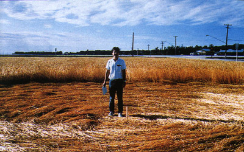

-
Un témoin au milieu du crop circle apparu à Saint-François-Xavier

Au Canada, apparition (ci-contre) d'un crop circle
à Saint-François-Xavier (Manitoba).
- Siemens reprend Nixdorf à 51 %, pour former SNI. L'ensemble pèse 40 milliards FF.
- IBM sort ses premiers
serveurs et stations de travail RISC, les RS/6000. Avec quelques
centaines d'applications supportées.
- Fujitsu débourse 7,4 milliards FF pour acheter à STC 80 % de ses parts
d'ICL. Le japonais devient ainsi n°2 mondial de l'informatique.
-
- IBM repart vers les sommets avec l'annonce
des grands systèmes ES/9000.
- Informatique à l'école : 5 ans après le "Plan informatique pour tous", le ministère de
l'Éducation veut équiper les écoles de 150000 micros.
- Témoignages en Belgique similaires à ceux de .
- Micro familial PS/1 d'IBM.
- Le CA de Microsoft dépasse le milliard $.
- Premier clone 386, chez AMD.
- Robert T. Morris Jr est condamné pour avoir créé en 1988 un programme de virus qui a infecté le réseau Internet.
- Naissance des réseaux à large bande ATM et SDH.
- Les EDI se développent en France.